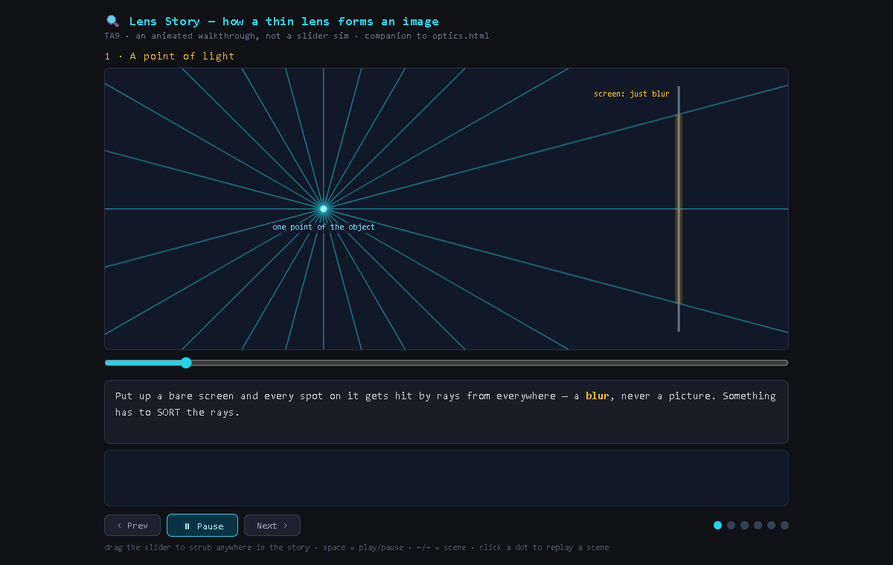

A sample, start to finish · October 2026
I don't make the content by hand. I run the pipeline that makes it, and I check every stage.
I'm Bardia Shah Abadi, an engineering student at the University of Victoria. I direct AI tools to make animated explainers, interactive simulations and diagrams, and I read what each stage made before the next one runs.

This site is the sample
Seven short pages: the work, the pipeline behind it, how it got here, the AI tools and what each one is for, and what comes next. Every number on these pages comes from a file or a commit in the project.